"In 2024, Acres attended to 4,177 cases out of 15,203 calls it received. It rescued 3,537 animals."— The Straits Times, 2025
Problem
Human-wildlife encounters have surged, overwhelming the ACRES rescue hotline and exposing slow response times, fragmented processes, and limited public awareness that endanger both humans and wildlife.
Solution
An app with a guided reporting system that connects users to rescue services, plus a volunteer network that mobilises community support.
Iteration 1 — Empathy
Understanding the problem
We interviewed 6 potential users about their experiences encountering wildlife.
Breakdowns
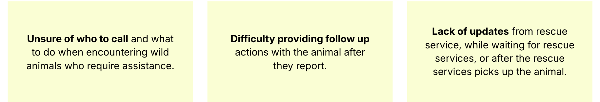
Persona
Jennifer Chang, 22
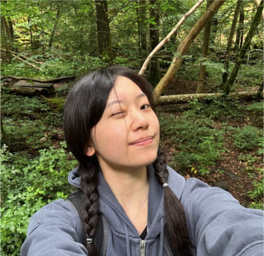
Goals
- Find rescue services
- Safety guidance
- Rescue assurance
- Status updates
- Simple reporting
Pain points
- Unsure who to call
- Limited safety knowledge
- Uncertain while waiting
- No rescue updates
Jennifer is a university student living near a nature reserve. Passionate about animal welfare, she wants to help injured wildlife but often doesn't know who to contact. She values quick, intuitive tools for reporting wildlife incidents.
Iteration 1 — Ideation
From breakdowns to features
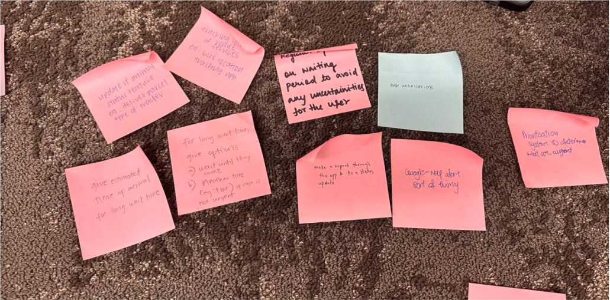
We generated four ideas for each problem, then refined them into three features:
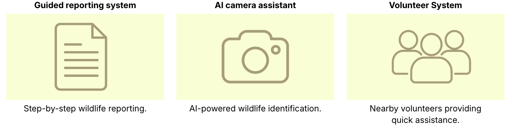
Iteration 1 — Lo-fi
Low-fidelity prototype
We took inspiration from Grab, the myResponder app and the SGPokeMap website. Before prototyping, we created a navigation diagram.
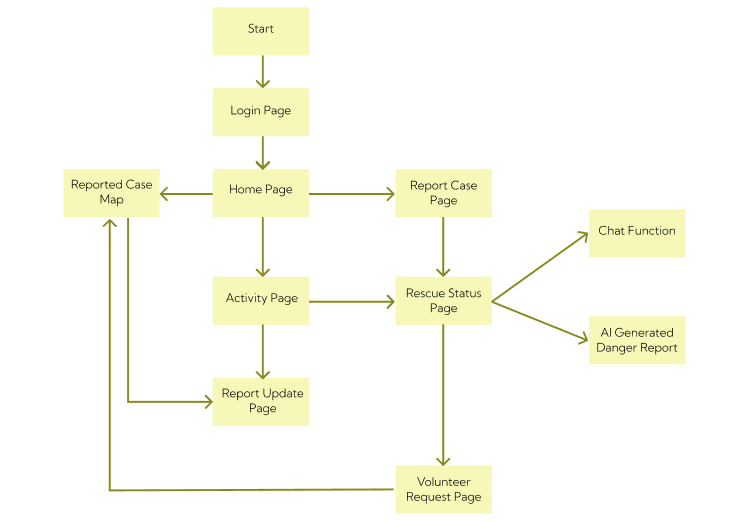
We did parallel prototyping before settling on the final lo-fi version.
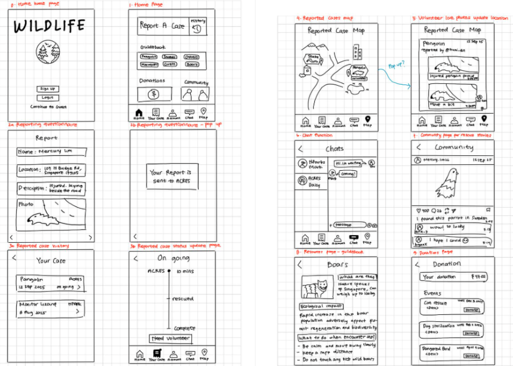
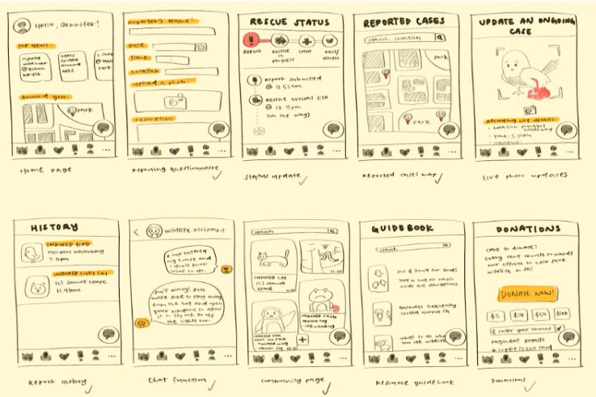
Here is our final lo-fi prototype, recorded with our user scenario.
Iteration 1 — Evaluate
Heuristic evaluation
We received 25 heuristic evaluations from classmates, identified the most common issues, and decided which fixes to implement. Three changes are shown below; other high-severity fixes were also made.
1. Improved submission flow and user control
- New "Save Draft" button
- Mandatory field indicators
- Confirmation pop-up
- Improved location selection
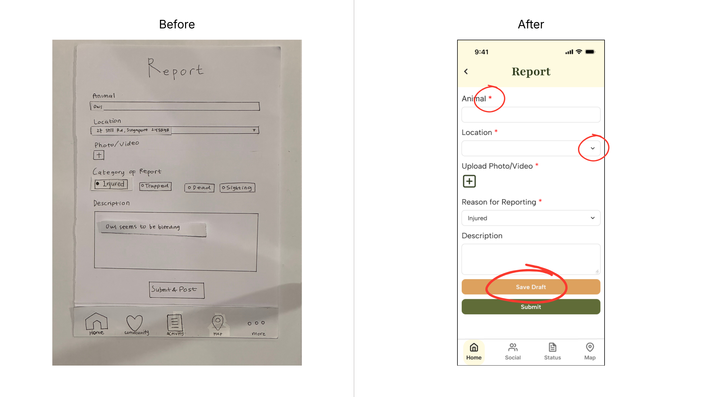
2. Redesigned screen flow
After submitting, users go straight to the "Potential Danger" page.
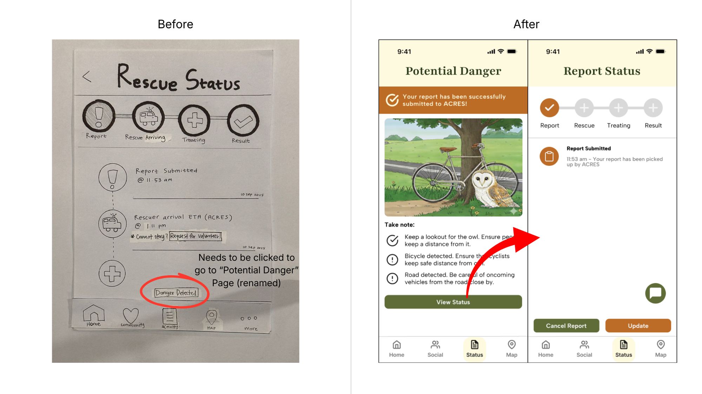
3. Clearer "Potential Danger" page
- Users are automatically taken to the page
- Header changed from "More Information" to "Potential Danger"
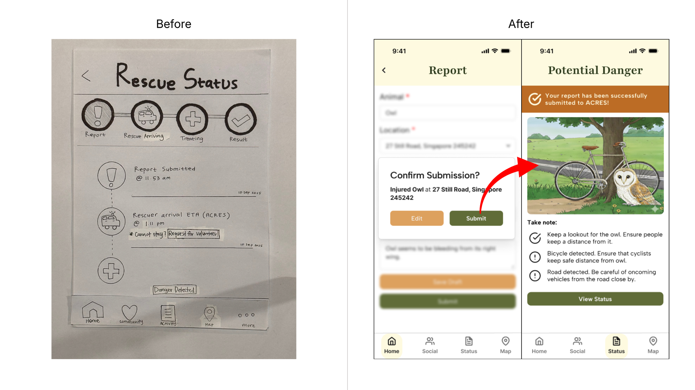
Iteration 2 — Hi-fi
High-fidelity prototype
We first refined our navigation diagram to match the updated prototype.
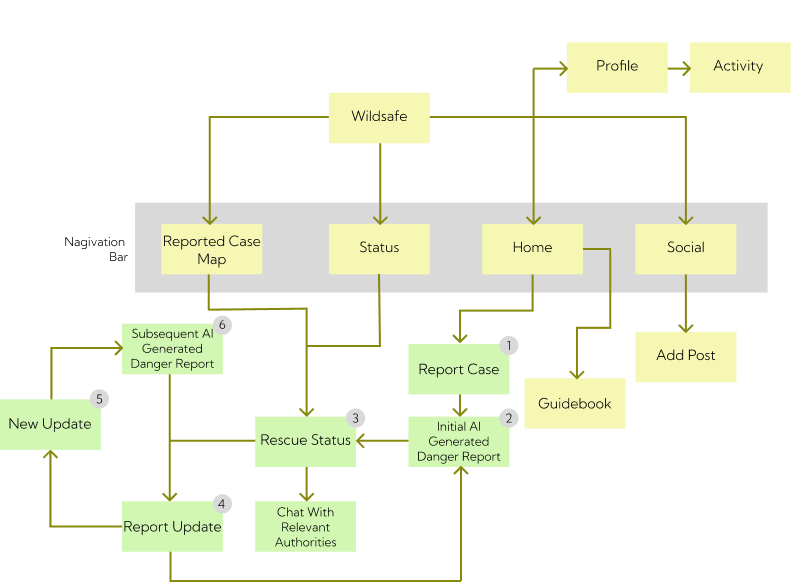
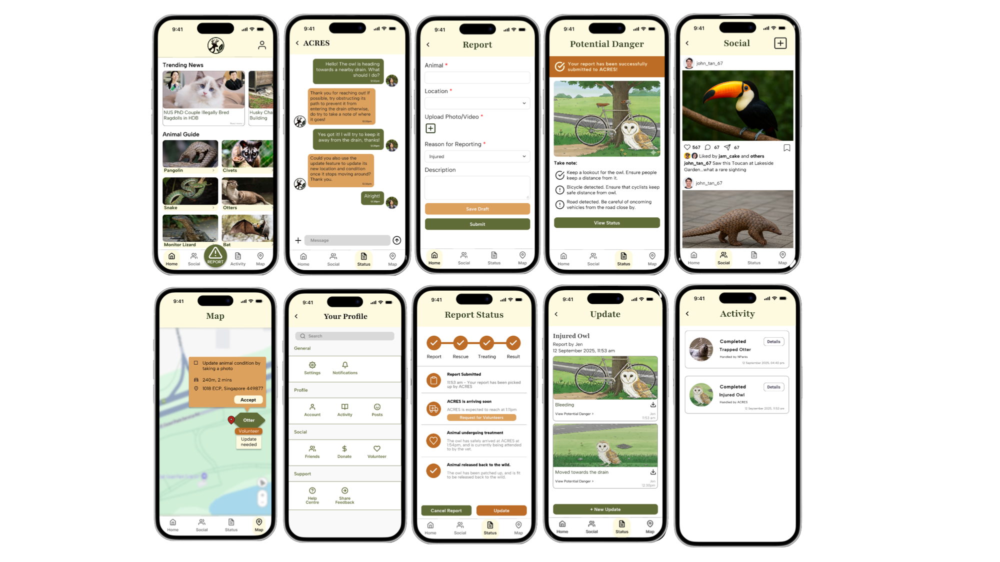
Features
- Home page
- Guidebook
- Report function
- Update function
- Potential danger page
- Social page
- Report status page
- Map
- Your profile
- Activity page
- Chat function
Iteration 2 — Test
A/B testing
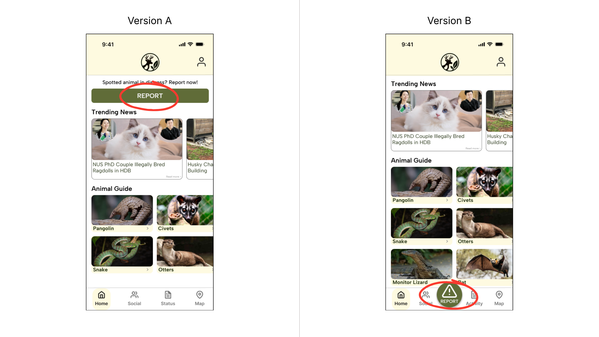
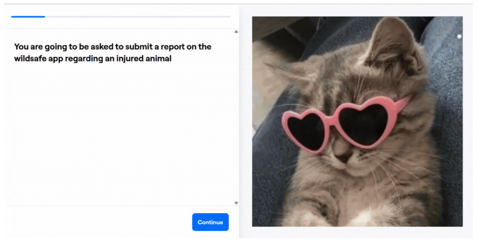
We ran a within-subjects test with 30 people, hosted on Maze.
Statistical findings
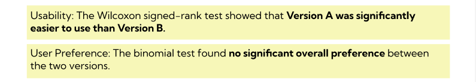
Pitch video
We had one minute to show how the app is meant to work.
Reflect
Reflection
This was my first design thinking project, and I learned a lot about the process behind creating an app. Things we take for granted take a lot of effort to build. After this project, my view of app-based solutions broadened, and I started thinking more about the work it takes to build an app that solves a real problem.
And here's a picture of me and my group mates :)
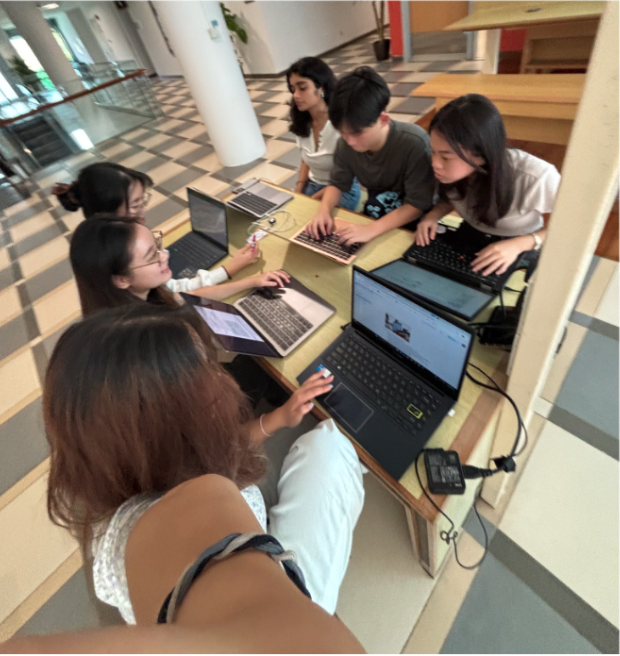